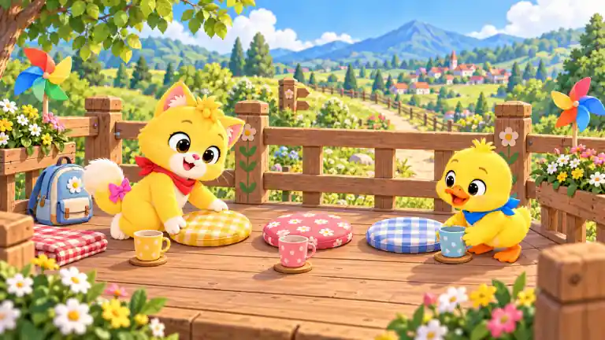
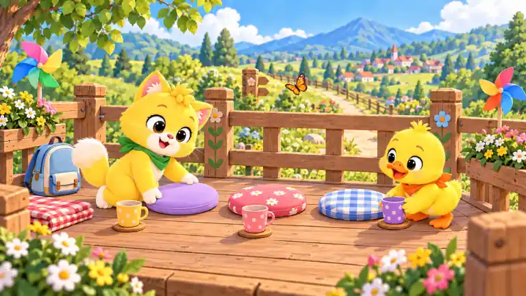
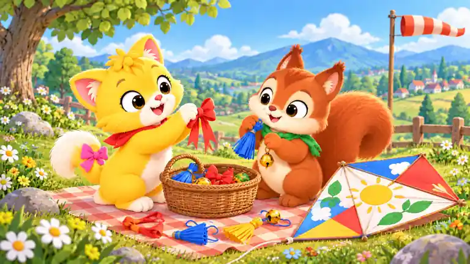
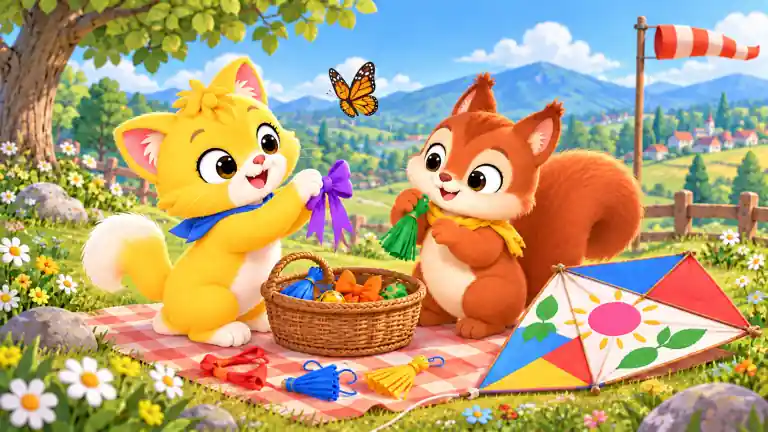

SD2-101 · 山脚先看哪条路
medium · 推车、双路标与分岔步道，信息量适中。
medium · 推车、双路标与分岔步道，信息量适中。
high · 坐垫、水杯、背包、风车、栏杆和村庄细节丰富。


low · 大角色、大风筝与充足天空草地留白。
medium · 星伴、风向袋、草穗、花篮与湖景层次适中。
high · 双角色、挂饰篮、彩绘风筝和野餐布形成高密度搜索。


low · 单角色、风筝和线轴为大形体，留白明显。
medium · 双角色、长尾带、篮、水壶与湖景信息量适中。
high · 线轴交接、风筝尾带、双水壶、围栏和湖景细节丰富。
low · 栗栗、星伴和少量大形体道具，留白充足。
medium · 双角色与收纳物清楚，小广场和湖畔背景提升到中档。